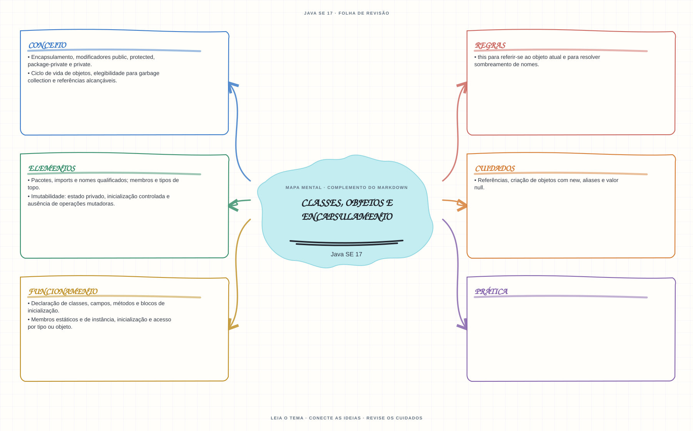

Ver mapa mental deste assuntoEntender referências, estado, escopo e limites de acesso de objetos e membros.
Primeiro contato: aprenda o conceito e pratique antes de consultar os detalhes de prova. Voltar aos fundamentos se algum termo ainda for novo.
- Leia o objetivo e localize a ideia principal no conteúdo abaixo.
- Preveja o resultado, compile e execute o exemplo.
- Faça a atividade sem copiar a solução e confira a checagem comentada.
EXEMPLO DE CONSOLE
Veja a regra em execução
Antes de executar, anote sua previsão. Compile o exemplo com o JDK e compare a saída observada com as regras deste assunto.
Comandos para compilar e executar
javac -d target/bin src/03-poo/classes-objetos-e-encapsulamento/ClassesObjetosEEncapsulamentoExample.java
java -cp target/bin ClassesObjetosEEncapsulamentoExampleA execução imprime o resultado no console para você comparar com sua previsão.
Consultar código-fonte: ClassesObjetosEEncapsulamentoExample.java
public class ClassesObjetosEEncapsulamentoExample {
private static class Conta {
private double saldo;
public void depositar(double valor) {
if (valor > 0) {
saldo += valor;
} else {
System.out.println("Deposito recusado: o valor precisa ser positivo.");
}
}
public double consultarSaldo() {
return saldo;
}
}
public static void main(String[] args) {
System.out.println("=== Classes, objetos e encapsulamento ===");
System.out.println("Cada Conta tem seu proprio estado; saldo so muda pelo metodo depositar().");
Conta contaPrincipal = new Conta();
Conta contaReserva = new Conta();
contaPrincipal.depositar(50.0);
contaPrincipal.depositar(-10.0);
contaReserva.depositar(20.0);
System.out.println("Saldo da conta principal: " + contaPrincipal.consultarSaldo());
System.out.println("Saldo independente da conta reserva: " + contaReserva.consultarSaldo());
}
}
PRATIQUE AGORA
Faça uma pequena alteração por conta própria
Crie uma classe Tarefa com descrição e estado concluído privados; instancie uma tarefa e imprima seus dados por métodos públicos.
Concluído quando: o programa compilar, produzir o resultado esperado e você conseguir explicar a regra aplicada.
CHECAGEM RÁPIDA · Classes, objetos e encapsulamento
Se b = a, a atribuição copia o objeto ou a referência?
Conferir resposta comentada
Copia a referência: a e b passam a apontar para o mesmo objeto; mudanças no estado observável por uma delas aparecem pela outra.
Estude
- Declaração de classes, campos, métodos e blocos de inicialização.
- Membros estáticos e de instância, inicialização e acesso por tipo ou objeto.
- Referências, criação de objetos com
new, aliases e valornull. - Encapsulamento, modificadores
public,protected, package-private eprivate. - Pacotes, imports e nomes qualificados; membros e tipos de topo.
- Imutabilidade: estado privado, inicialização controlada e ausência de operações mutadoras.
- Ciclo de vida de objetos, elegibilidade para garbage collection e referências alcançáveis.
thispara referir-se ao objeto atual e para resolver sombreamento de nomes.
Prática
Desenhe a sequência de inicialização de um objeto e identifique o estado observado por cada método chamado.
Como este capítulo se relaciona com cada exame
POO básica é reaproveitável; records e sealed não existem em Java 8.
Base de estudo deste portal; confirme o mapeamento com o blueprint vigente.
Conceitos úteis; revise recursos de linguagem e regras de Java 21.
Orientação editorial sobre reaproveitamento do material; não representa objetivos oficiais nem garante cobertura do exame. Consulte o comparativo e as fontes da Oracle.